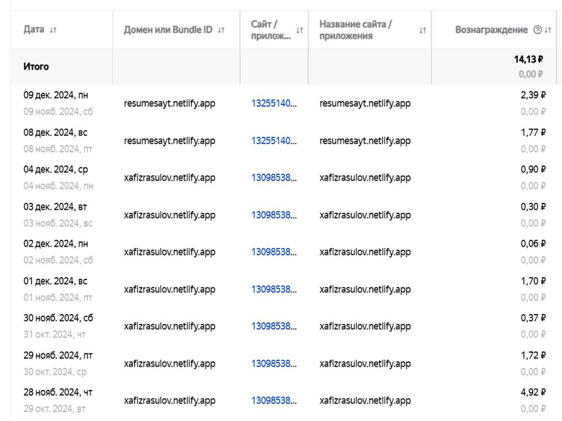

Sayt orqali pul topish
Sayt 3 kunda, ya’ni 28-noyabrdan 30-noyabrgacha 7,01 rubl ishladi. Tasavvur qiling, 3-4 ta sayt yaratdingiz. Asosiysi – bu saytlarda juda qiziq ma’lumotlar berilgan. Agar bitta sayt 1 kunda 10 rubl daromad keltirsa, 30 kunda (ya’ni 1 oyda) 300 rubl bo‘ladi. 4 ta sayt esa xuddi shu tarzda 1 oyda 1200 rubl ishlaydi. 1200 rubl esa Google ma’lumotlariga ko‘ra bugungi kunda 148 474 so‘mga teng. Hisoblab ketdingizmi?
Balki Sizni saytingiz bundan-da ko‘proq samaraliroq bo‘lar? Asosiysi, Kianu Rivz aytganidek, “Oddiy bir naql bor - baxt pulda emas. To‘g‘ri. Lekin pulni borligi yaxshi. Kvartira uchun, restoranda va hokazolarda to‘lashga imkoning bo‘lsa, yoqimli. Pul evaziga o‘zing hohlagan hayotni, yashash erkinligini sotib olasan”.
Yana bir qiziq jumlani eshitganmisiz, “ota-onangni oldida ko‘ziga tikilib o‘tirganing bilan ularning dardiga darmon bo‘la olmasang, orzularini ro‘yobga chiqara olmasang, yetarlicha puling bo‘lmaganligidan - kerak bo‘lganida malakali mutaxassislarga ko‘rsata olmasang, yonida ekanligingni nima foydasi bor?”
Milliarder Uorren Baffetning quyidagi iborasini eshitganligingiz aniq: “Agar tunda uxlayotganingizda ham pul topishning yo‘lini topa olmasangiz, butun umr ishlashga majbur bo‘lasiz”. Xulosa o‘zingizdan.
Rasmga qarasangiz, 28 noyabrdan 4 dekabrgacha test sifatida bir saytni “Рекламная сеть Яндекс” platformasiga joyladim. Keyin uni o‘chirib, 3 kundan keyin resumesayt.netlify.app nomli boshqa saytni joyladim.
Agar Siz ham passiv daromad topmoqchi bo‘lsangiz, ya’ni Yandeks reklama tarmog‘iga o‘z saytingizni joylab saytingizda ko‘rsatilayotgan Yandeks reklamalari ko‘rsatuvidan daromadga chiqmoqchi bo‘lsangiz, Google qidiruv tizimida “Рекламная сеть Яндекс” deb yozishingiz kerak bo‘ladi. Yoki ushbu yozuv ustiga bosib Yandeks reklama tarmog‘iga kirib ro‘yxatdan o‘tishingiz lozim.
Ro‘yxatdan o‘tgach “Реклама на сайтах” bo‘limiga kirib “Добавить сайт” tugmasini bosish kerak. Shundan so‘ng sayt nomini kiritib hamda “Сохранить” tugmasi orqali o‘zgarishlarni saqlaysiz. Saytingizga bir yoki bir nechta reklama bloklarini qo‘shishingiz mumkin.

Buning uchun “Добавить блок” tugmasini bosishingiz kerak. Reklama uchun blok turlaridan birini tanlaysiz va sahifa oxirida joylashgan “Сохранить” tugmasi orqali o‘zgarishlarni saqlaysiz. Monitorda “Вы создали рекламный блок!” degan xabar chiqadi.

Sahifada taqdim qilingan reklamani yuklash uchun 2 ta kodlarni o‘z saytingizga yo‘riqnomada ko‘rsatilgan tarzda joylaysiz. Shundan so‘ng VS Code dagi github extension yordamida o‘zgarishlarni Github ga jo‘natasiz. Sayt moderatsiyadan o‘tganidan keyin saytingizda reklama ko‘rinib boshlaydi.
Bilaman endi Sizda turli g‘oyalar paydo bo‘la boshladi. Hali ko‘p savollar tug‘ilishi ham tabiiy. Ma’lumot sifatida aytib o‘taman, telegram kanal orqali ham uyda o‘tirgan holda ko‘plab daromad topsa bo‘larkan, lekin oz muddatli tajribamdan shuni bildim-ki, sayt orqali pul topish tezroq amalga oshar ekan. Sababi “Рекламная сеть Яндекс”da telegramni monetizatsiyaga ulash uchun kanalingizda 1500 ta obunachi bo‘lishi lozim.
Sayt orqali daromad topishning boshqa yo‘llarini keyingi sahifalarda keltirib o‘taman.
Dasturlashni o‘rganish davomida motivatsiyani saqlab qolishning 7 usuli
Agar IT sohasida endigina o‘qishni boshlagan tanishingiz mashg‘ulotlarni tashlab qo‘ymoqchi bo‘lsa, unga mana shu maqolani ko‘rsating.
Dasturlashni o‘rganishni endi boshlaganingizda, osondek tuyuladi - har bir yangi mavzuni o‘zlashtirish, “Hello, world” ni ishga tushirish yoki xatolikni tuzatish go‘yoki IT sohasidagi orzuingizga va u bilan birga keladigan barcha afzalliklarga yaqinlashtirayotgandek. Ammo keyin material to‘satdan qiyinlashadi va boshqa bir haqiqat yuzaga keladi: kod ishlamaydi, xatoliklar birin-ketin chiqadi, ustiga-ustak vaqt ham yetmaydi - o‘qish, ish, oila... Shu payt o‘ylaysiz: “Dasturlashni tashlab, yaxshiroq, osonroq narsani tanlayman”. Yaxshi yangilik shundaki, bunday hissiyotlarni kod yozishni o‘rgangan har bir kishi boshdan kechiradi - boshlang‘ichlardan tortib professionalgacha. Ushbu maqolada dasturlashni yangi boshlaganlar ham, tajribali dasturchilar ham foydalanishi mumkin bo‘lgan 7 ta foydali usulni ko'rib chiqamiz.
Maslahat №1.
Charchash hammada bo‘ladi, bu normal holat. O‘qishni biroz vaqtga to‘xtatib, boshqa narsalarga chalg‘ishdan qo‘rqmang. Agar qaytmasangiz, ehtimol bu sohaga qiziqish yo‘qdir. Agar qaytsangiz, yangidan kuch va ishtiyoq bilan davom etasiz. Chalg‘ish uchun mutlaqo boshqa faoliyatni tanlash maqsadga muvofiq, masalan, sport bilan shug‘ullanish.
Maslahat №2. Dasturchilar jamiyatining bir qismiga aylaning.
Agar sizni qo‘llab-quvvatlaydigan, maslahat beradigan, tanqid qiladigan, siz bilan jamoa tuzadigan va o‘z loyihalari bilan bo‘lishadigan insonlar qurshasa, o‘rganish jarayoni osonroq va qiziqarliroq bo‘ladi. Bunday hamfikrlarni kurs chatida, tegishli guruhlarda topishingiz mumkin.
Maslahat №3. Muvaffaqiyat hikoyalarini o‘qing.
Mashhur dasturchilar haqida hikoyalar motivatsiya berishi mumkin, lekin ba’zan tushkunlikka tushirishi ham ehtimol, chunki kimdir shunday natijaga erishish uchun «geniy bo‘lish kerak» deb o‘ylashi mumkin. Oddiy talabalarning 0 dan boshlab erishgan yutuqlari haqida hikoyalarni o‘qing.
Maslahat №4. Shaxsiy manfaatingizni toping.
Motivatsiyani saqlab qolishga bir oddiy savolga aniq javob berish yordam beradi: «Nega men bu bilan shug‘ullanayapman? Aniq nimaga erishmoqchiman va dasturlash orqali qanday imkoniyatlar ochiladi?» Agar dasturlash bilan faqat pul uchun shug‘ullanayotgan bo‘lsangiz, bu xavfli yo‘l bo‘lishi mumkin. Chunki pul bo‘ladi, lekin hamma uchun emas va har doim emas. Dasturlashni o‘rganishda, eng muhim narsalardan biri darhol o‘rganilgan narsani sinab ko‘rish va amalda qo‘llash. Dastur xuddi o‘zingiz o‘ylagandek ishlagani katta quvonch bag‘ishlaydi. Keyingi bosqich – yanada kattaroq ish. Har bir yangi elementni sinab ko‘rib, yangi dastur yozish yoki eskisini yaxshilash zarur. Bu jarayon xuddi o‘yindek o‘ziga tortadi.
Maslahat №5. Vazifani bo‘laklarga bo‘lib bajaring.
Motivatsiyani yuqori darajada saqlashning siri – bu kichik vazifalar usuli va mukofotlash tizimidir. Har bir vazifa uchun o‘zingizga mukofot va’da qiling: masalan qahva yoki shokolad. Ishoning, “shaxsiy veb sayt yaratish” uchun mukofot sifatida shokolad – bu ajoyib mukofot! Ko‘pincha, 5 daqiqalik vazifa katta bir soatlik ishga aylanib ketadi. Agar energiya tugasa, mikro-vazifani bajargan bo‘lsangiz ham, bu kun davomida hech narsa qilmaslikdan ko'ra yaxshiroq. Qanday bo‘lmasin, siz zo‘rsiz! Motivatsiyani yo‘qotmaslik uchun kichikdan boshlang va hammasini birdaniga egallashga urinmang. Maqsadlaringizni realistik qiling – kichik g‘alabalar rivojlanishga undaydi.
Maslahat №6. Atrofingizni dasturlash bilan to’ldiring.
Tashqi muhit juda katta yordam beradi. Atrofingizni o‘zingizga yoqadigan narsalar bilan o‘rab oling. Plakat ilib qo‘ying, katta monitor, yaxshi klaviatura xarid qiling yoki kayfiyatingizga mos musiqa playlist tuzing. Shunda siz darslarga qaytishni hohlay boshlaysiz va qiziqishlaringizni his qilasiz. Yana bir maslahat – orzuingizni vizuallashtiring. Kimdir Gentra mashina olishni istasa, yana kimdir chet elga sayohatga borishni yoki ota-onasini hajga yuborishni orzu qiladi. Orzuingizni tasavvur qiling va vizuallashtiring. “Orzular taxtasi” degan usul bor: taxtaga o‘zingiz orzu qilgan narsalar yoki ular uchun mehnat qilayotganingiz suratlarini ilib qo‘yasiz. Mening noutbukim monitori ish stolida har doim “Barcha diqqat focus DASTURLASHGA” degan so‘z turadi. Bu hech qachon taslim bo‘lmaslikka motivatsiya beradi! Telegramda boshlovchilar uchun 1-2 ta kanal topib, shunchaki postlarni o‘qib boring. Avvaliga hech narsani tushunmasligingiz yoki terminologiyadan uzoq bo‘lishingiz mumkin, lekin vaqt o‘tib hammasini yaxshiroq tushuna boshlaysiz.
Maslahat №7. Qo‘rquvni yengish.
Ko‘pincha motivatsiyaning asosiy dushmani – bu qo‘rquv. Xuddi velosiped minishni o‘rganishdek, dasturlash ham ko‘p mashqni talab qiladi. Savollar berishdan va maslahat so‘rashdan qo‘rqmang. Har bir yangi mavzu qiyin ko‘rinsa ham, bu oddiy jarayonning bir qismi ekanini unutmang. Vaqt o‘tib hammasi tushunarli bo‘ladi!